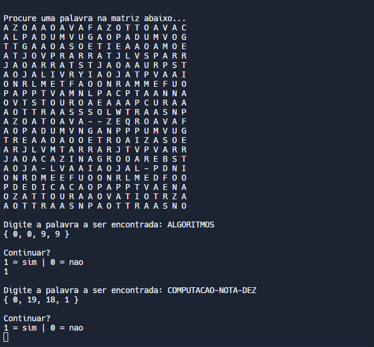
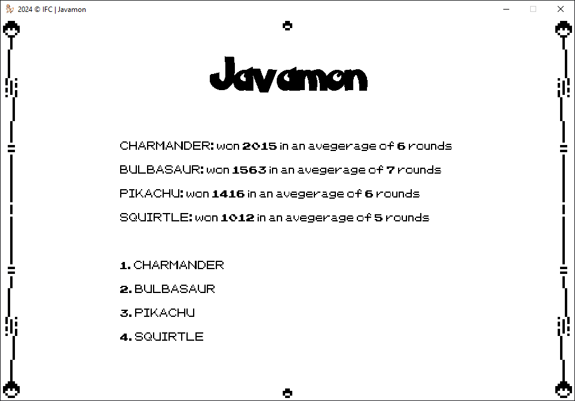
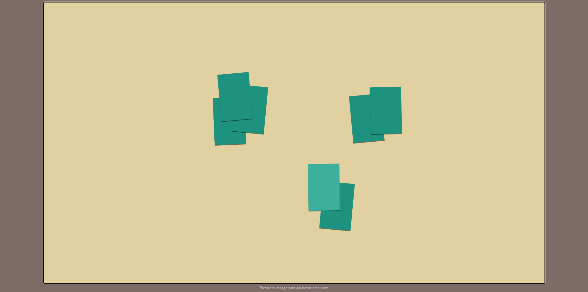

Esta foto leva para meu Github
Sobre mim
Formação Acadêmica
Instituição: IFC - Instituto Federal Catarinense
Semestre: 4º
Disciplinas favoritas:
- Programação Orientada a Objetos
- Desenvolvimento Web
- Paradigmas da Computação
Interesses e Habilidades
Tenho experiência em diversas linguagens de programação, como Java, Javascript e GameMaker Language (GML), além de conhecimentos em C. Meu foco está no desenvolvimento de jogos e também estou expandindo minhas habilidades em Desenvolvimento Web. Ferramentas com as quais trabalho frequentemente incluem Git, VSCode e GameMaker. Estou sempre buscando aprender novas tecnologias e metodologias que possam melhorar minha forma de desenvolver projetos.
Experiência Profissional
Ainda não tive a oportunidade de realizar estágios na área de tecnologia, mas venho aplicando meus conhecimentos em projetos pessoais e acadêmicos, sempre buscando evoluir e estar preparado para futuras oportunidades no mercado de trabalho.
Participação em Eventos
Já participei ativamente da semana acadêmica do BCC do IFC Videira. Onde, além de ajudar com a organização, desenvolvi uma oficina de desenvolvimento de jogos com o GameMaker Studio para o ensino médio.
Metas e Objetivos
No curto prazo, meu objetivo é consolidar minhas habilidades em Design Gráfico e Gestão de Projetos, e começar a contribuir para projetos open-source. No longo prazo, quero me especializar nessas áreas, combinando o lado técnico e criativo para entregar projetos inovadores e bem gerenciados.
Certificações e Cursos Complementares
Além da graduação, estou buscando sempre me atualizar com cursos complementares. Até o momento, pretendo concluir certificações em Administração e Design.
Projetos
-
Word Hunter Source Code (download txt)

-
Javamon Source Code (Git)

-
Jogo de cartas infantil Source Code (Git)
